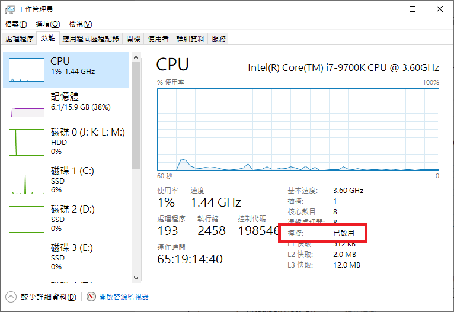

把你的電腦，變成 Pi Node。
一頁式現代化教學，從環境準備、Pi Desktop、Docker，到 Port 與節點狀態檢查，按照流程一步一步完成。
$ node status Pi Node ● READY Docker ● RUNNING Network ● CONNECTED Ports ● CHECK Next step → keep your node online
01 · 事前準備
先確認電腦、網路與軟體環境，再開始安裝，可以少走很多彎路。
Windows 電腦
如果你使用 Windows，建議先完成系統更新，並準備管理員權限，以便安裝 Pi Desktop 與 Docker。
穩定網路
Node 需要持續與網路通訊。若使用 Wi‑Fi，建議讓電腦固定連線；有條件時可優先使用有線網路。
磁碟與資源
如果使用 Linux Node，目前官方文件列出的起始需求為 150GB 磁碟空間、4 vCPU、4GB RAM；Windows 版本則以 Node App 實際檢查結果為準。
Docker 官方下載
Pi Node 的部分環境會用到 Docker。請只從 Docker 官方網站下載，避免使用第三方重包安裝檔。
02 · 架設流程
按照順序完成。新版 Node 對 Port 設定更友善，但 Docker 與節點啟動仍是核心步驟。
依 Node App 提示完成初始化
Node 會顯示需要完成的環境與容器設定。不要自行混用舊版教學中的 Docker 設定檔。
啟動 Node 與 Consensus Container
確認 Node 開關已開啟，Docker Engine 正常運作，並觀察 Pi Node 的診斷資訊是否持續更新。
設定 Port：先試 UPnP，再手動轉發
Node 0.6.2 新增 UPnP 自動 Port 設定。支援的路由器可直接使用；若沒有成功，再進入路由器設定 Port Forwarding。
從電腦準備到進入 Node 頁面
以下補上圖文參考流程中容易略過的 Windows 與首次登入細節。配圖取自參考安裝教學 ↗；部分是 Windows 10 與舊版 Pi Node 畫面，只作位置示意。Pi Node、Docker 版本更新後，畫面和按鈕名稱可能改變；請以目前官方安裝程式及 App 提示為準。
先確認 CPU 虛擬化已啟用
在工作管理員的「效能 → CPU」查看虛擬化狀態。若未啟用，依主機板廠牌與型號查詢 BIOS/UEFI 設定並開啟 Intel VT-x 或 AMD-V。可在 CMD 執行 wmic baseboard get product,Manufacturer 查主機板資訊；新版本 Windows 若沒有 WMIC，可改用系統資訊或 PowerShell 查詢。


安裝 Windows 虛擬化元件（安裝程式需要時）
在 Windows 搜尋「開啟或關閉 Windows 功能」，啟用「適用於 Linux 的 Windows 子系統」與「虛擬機器平台」，按確定並依提示重新啟動。Docker Desktop 若提示安裝／更新 WSL，請照提示完成；舊版 WSL2 核心更新套件可由 Microsoft 官方連結下載 ↗。部分較新的 Windows 安裝流程會由 WSL 更新指令或安裝程式處理。

完成 Docker 初次啟動
依 Docker Desktop 安裝程式完成安裝。若安裝程式要求登出或重新啟動，照提示操作；首次開啟時接受服務條款並等待 Docker 啟動完成。若出現教學可略過，之後讓 Docker 在背景保持執行。Docker 狀態未正常前，先處理 Docker 顯示的錯誤再啟動節點。


登入 Pi Node 並完成首次申請
Node App 安裝完成後按「LOGIN」，依畫面產生的登入碼在手機 Pi App 輸入／確認。回到電腦端進入「Node」並按「APPLY」。首次設定若出現問卷，填完按「SUBMIT」；送出後按返回，再按「CONTINUE」繼續。登入碼是個人登入憑證，請勿分享或截圖公開。


確認 Docker 狀態，再啟動 Node
若 Node 頁面的 Docker 狀態未顯示正常，先排除 Docker 問題。可展開「Open router ports」查看連接埠說明；完成準備後開啟 Node 中央開關。Pi Node 會依當前流程下載並啟動所需容器（常見名稱為 pi-consensus），初次下載可能需要等待。


讓節點持續執行並查看同步進度
節點開關保持開啟，視窗可縮小或關閉，App 仍可在背景執行；關閉開關會停止節點容器。區塊同步需要時間，可查看 同步進度說明 ↗。若新安裝後卡在啟動／轉圈畫面，先看 轉圈問題排除指南 ↗，並核對其適用版本。

Port Checker 是檢查工具，不會替你設定 Windows 防火牆或路由器。參考流程提到的舊版「Check now」可能透過 Docker 建立 stellar-dummy 測試容器；若 Windows 防火牆詢問是否允許該工具，僅在你確定是由 Pi Node 啟動且信任來源時處理。不要同時執行 Port 測試容器與節點共識容器；完成測試後關閉測試，再啟動 Node。檢查結果受網路延遲影響，偶爾顯示未開不代表設定自動改變。Port 未開通常仍可執行普通節點，但可能無法符合需要對外連線的條件。也可用 Pi Mods Port 測試頁 ↗；請在執行 Node 的電腦上開啟，並以目前 Node App 的診斷結果為準。
03 · 進入路由器後台
不確定路由器在哪裡設定？先用 Windows 找到 Default Gateway，再把瀏覽器帶到路由器的管理頁面。
開啟 Windows Terminal / CMD
按 Win + R → 輸入 cmd → Enter。
查詢 Default Gateway
輸入下面指令，找你目前網卡的 Default Gateway。
ipconfigEthernet adapter Ethernet:
Connection-specific DNS Suffix . :
Link-local IPv6 Address . . . . . : fe80::1f07:2eaa:156e:ea95%15
IPv4 Address. . . . . . . . . . . : 192.168.213.100
Subnet Mask . . . . . . . . . . . : 255.255.255.0
Default Gateway . . . . . . . . . . : 192.168.213.1
The highlighted Default Gateway is an example. Find this line in your own ipconfig output and use its address; the IP shown above is illustrative.
在瀏覽器輸入 Gateway
例如你的 Default Gateway 是 192.168.213.1，就在網址列輸入：
http://192.168.213.1登入路由器管理介面
輸入路由器管理帳號與密碼。帳密通常可在機身貼紙、ISP 文件、安裝資料或你自己設定的密碼管理工具中找到。
尋找 Port Forwarding
不同品牌名稱可能不同，常見關鍵字：
進入後台後，先不要亂改設定
你真正要找的是「NAT／Port Forwarding」。通常不需要修改 WAN、DHCP、PPPoE 或其他進階網路設定。
Windows Defender Firewall
若 Pi Node 的連線被 Windows 防火牆擋住，可建立入站規則允許節點連線。以下畫面是操作示意，Windows 版本不同時介面文字可能略有差異。
新增 Pi Node 入站連接埠規則
按 Win + R，輸入 wf.msc 開啟「Windows Defender 防火牆（進階安全性）」。以下依序在精靈中選擇設定。


03 · Port 設定
Pi 的歷史文件指出 Node 使用 31400–31409 這組 Port。新版 Node 另提供自動 Port 設定與 Port Checker。
需要確認的 Port 範圍
先開啟 UPnP
如果路由器支援 UPnP，先讓 Node 自動嘗試設定需要的網路連通性。這是 0.6.2 新增的便利功能。
手動 Port Forwarding
若 UPnP 不可用，進入路由器管理頁面，將需要的 Port 轉發到執行 Pi Node 的電腦區域網路 IP。歷史文件與 Node Checker 都以 31400–31409 為核心範圍。
回到 Node 檢查
完成設定後，回到 Pi Node 的 Port Checker 重新檢查。外部 Port 狀態可能需要一些時間才會反映。
手動轉發規則怎麼填？
假設你的 Pi Node 電腦在區網 IP 192.168.1.50。以下只是示範格式；實際欄位名稱會依路由器品牌不同而不同。
04 · 開始前自我檢查
把常見問題先排除，再進入長時間同步。
05 · 常見排錯
先看現象，再判斷是 Port、Docker、同步或網路問題。
Port 顯示沒有開，是不是 Node 一定不能跑？
不一定。Port 狀態與節點對外連入能力有關；遇到問題時，先確認路由器、Windows 防火牆、UPnP 與實際 LAN IP，再看 Node App 的診斷資訊。
Consensus Container 沒有跑起來怎麼辦？
先確認 Docker Engine 正常運作，再重新啟動 Pi Node。若持續出現容器錯誤，記錄 Node App 的 Troubleshooting / Diagnostics 資訊，再依官方支援與 Wiki 進一步排查。
一直顯示同步中，是壞掉了嗎？
同步本身可能需要時間。先觀察 Local Block / Latest Block 是否有變化，以及 Incoming / Outgoing Connections 是否逐步建立。若長時間完全不變，再進一步查看網路與 Docker 狀態。
下載 Node 時看到 Windows SmartScreen 警告怎麼辦？
Pi 官方說明指出，新的網路下載軟體可能觸發 Microsoft Defender SmartScreen 提示；請先確認下載來源確實為 Pi Network 官方網站，再依你的 Windows 安全設定作決定。